Dismech
A Disease Mechanisms Knowledge Base Built For and With Agentic AI
Christopher J. Mungall & Harry Caufield Lawrence Berkeley National Laboratory Monarch Initiative
February 2026
What is Dismech?
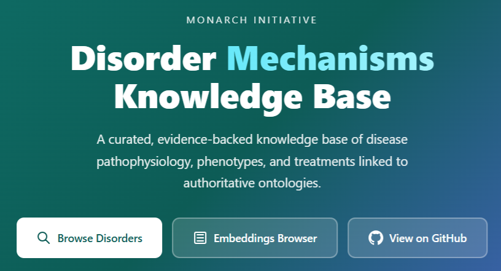
- A Disorder Mechanisms Knowledge Base with structured, evidence-backed pathophysiology from scientific literature
- A proof-of-concept for agentic AI-supported biomedical data curation
- A growing collection of ~500 disorders with ontology-grounded phenotypes, mechanisms, treatments, and causal graphs
- Built by members of the Monarch Initiative -- anyone can curate a new page
Goal: Capture why diseases present the way they do, not just what features they have
The Problem: Mechanism is Missing
Existing resources capture disease-phenotype associations well:
| Resource | Strengths | Gap |
|---|---|---|
| HPO/OMIM | Phenotype annotations | No causal chains |
| KEGG Disease | Pathway links | Limited phenotype detail |
| DisGeNET | Gene-disease associations | No pathophysiology narrative |
| ClinVar | Variant-level evidence | No mechanism context |
Clinicians and AI systems need to know why a mutation leads to a phenotype -- the intermediate steps matter for diagnosis, treatment selection, and drug discovery.
Browsing Dismech: Faceted Search
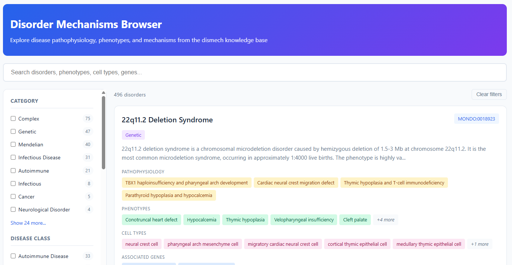
496 disorders searchable by category, disease class, cell type, gene, and treatment.
Browsing Dismech: Disorder Detail
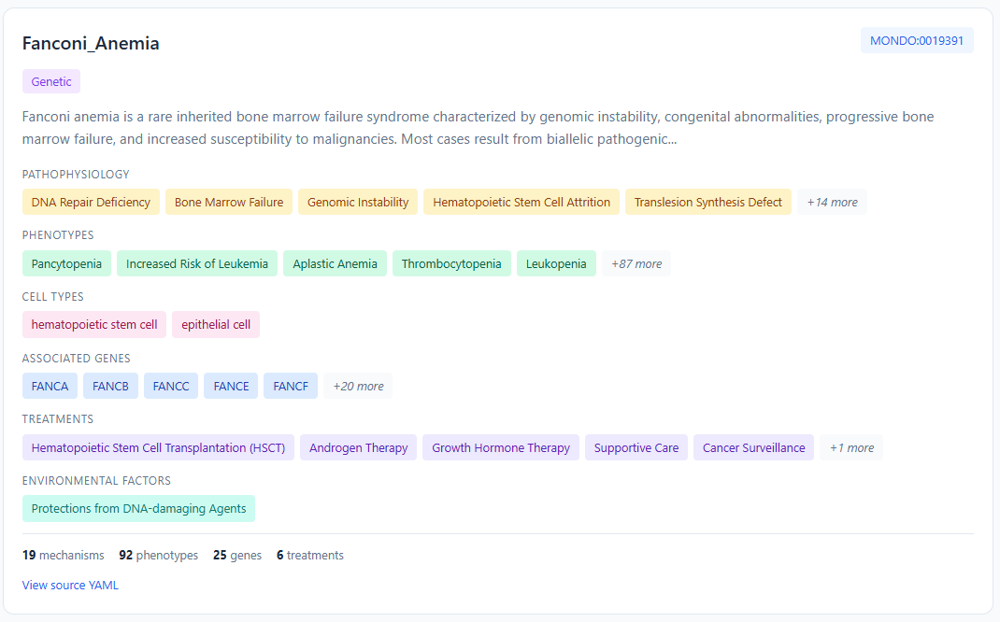
Each entry shows pathophysiology, phenotypes, cell types, genes, treatments, and environmental factors at a glance.
Browsing Dismech: Rich Header with Metrics
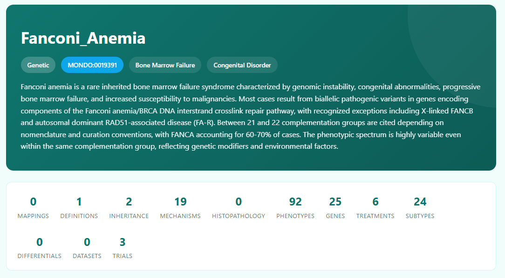
Summary metrics show curation depth: mappings, definitions, mechanisms, phenotypes, genes, treatments, subtypes, and trials.
Causal Graphs
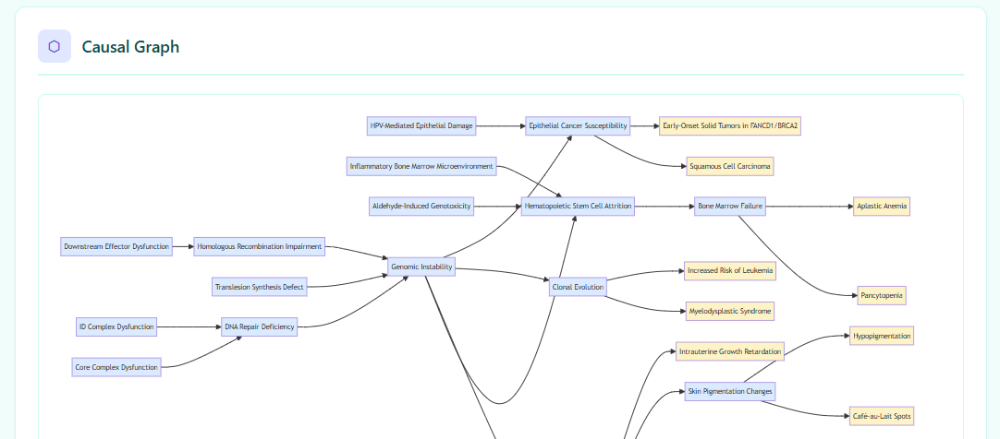
Interactive DAGs connect upstream molecular defects through intermediate mechanisms to downstream clinical phenotypes. Fanconi Anemia shown above with 19 mechanism nodes.
Objective: Full Provenance for Every Assertion
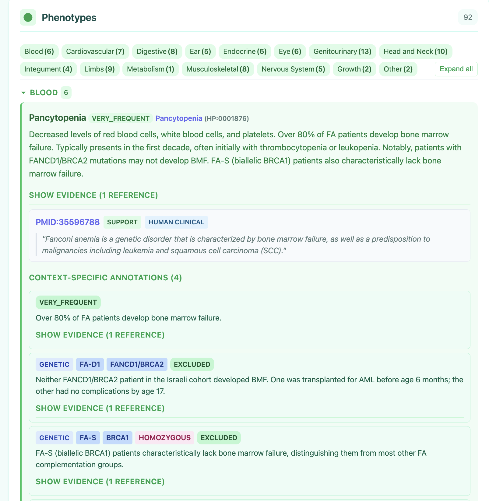
Each phenotype has: - Frequency (OBLIGATE to VERY_RARE) - HPO term binding - Evidence with PMID + exact snippet - Context-specific annotations varying by genotype
Example: Pancytopenia in FA is VERY_FREQUENT overall, but excluded in FANCD1/BRCA2 and FA-S/BRCA1 subtypes.
Evidence: YAML Source with PubMed Provenance
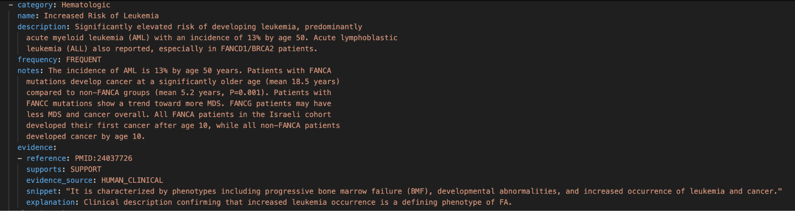
Every assertion in the YAML links to a PMID with an exact quoted snippet. The evidence_source field classifies whether the evidence comes from human clinical data, model organisms, in vitro work, or computational analysis.
Anti-Hallucination Validation Stack
Three layers of validation catch AI errors:
| Layer | Tool | What it catches |
|---|---|---|
| Schema | linkml-validate |
Missing fields, wrong types, invalid enums |
| Terms | linkml-term-validator |
Fake ontology IDs, wrong labels, obsolete terms |
| References | linkml-reference-validator |
Fabricated quotes, wrong PMIDs, paraphrased snippets |
just validate kb/disorders/Fanconi_Anemia.yaml
# Runs all three layers
This is critical when AI agents are generating content -- the validation catches what the model is confident about but wrong.
The Curation Workflow
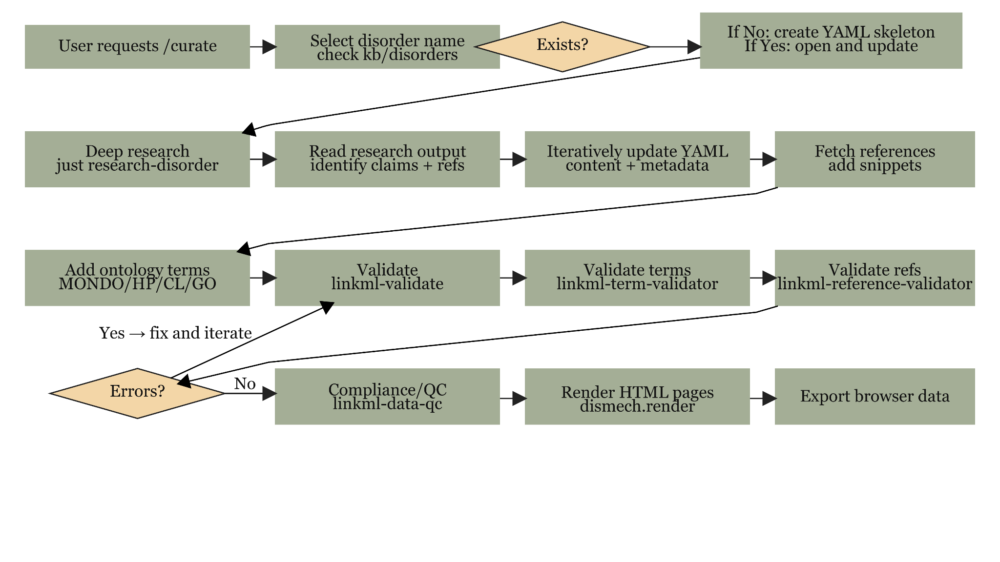
A single /curate command drives the full pipeline: deep research, YAML generation, reference fetching, three-layer validation, compliance scoring, HTML rendering, and PR submission.
GitHub Actions: Autonomous Curation
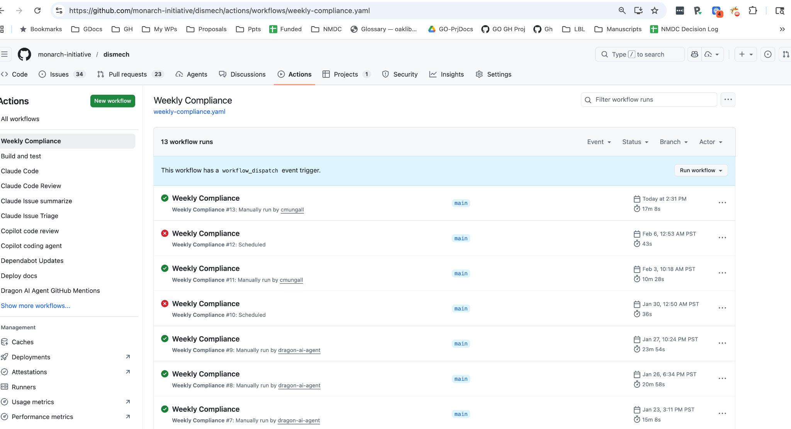
Multiple actions run on different triggers:
- Weekly Compliance -- identifies low-scoring files, dispatches Claude to fix them
- PR Review -- deterministic QC + AI review on every pull request
- Manual dispatch -- parameterized by focus area and Claude model
5 Minutes Later...
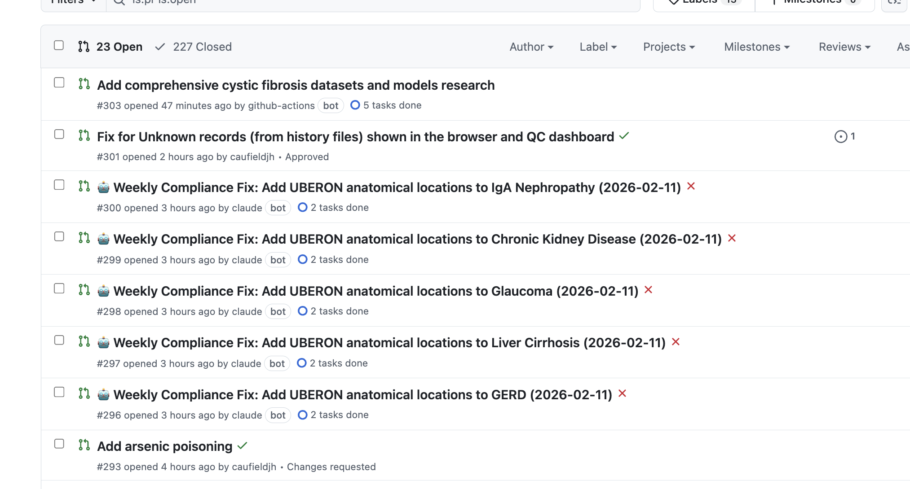
Parameterized dispatch (e.g., "anatomical locations using uberon") identifies lowest-compliance files, dispatches Claude Code for each, and opens PRs with validated ontology terms -- all automatically.
AI-Powered PR Review
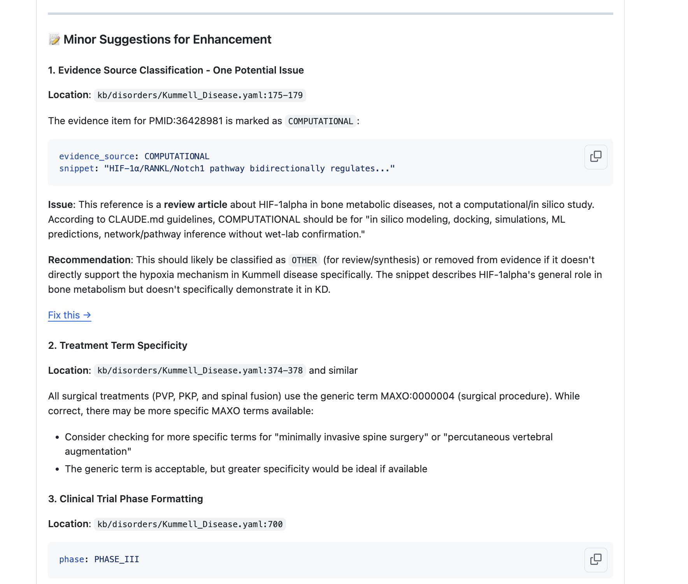
Claude Code reviews PRs against dismech coding standards:
- Evidence source classification
- Treatment term specificity
- Clinical trial formatting
- Ontology term validation
Each suggestion includes location, issue, and recommendation with a "Fix it" link.
QC Dashboard
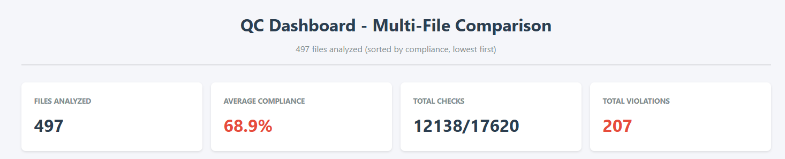
Automated compliance scoring across all ~500 disorder files. Compliance is weighted -- mechanisms and evidence are worth more than optional metadata. The dashboard identifies priority curation targets for the weekly bot.
What Have We Learned About Agentic Curation?
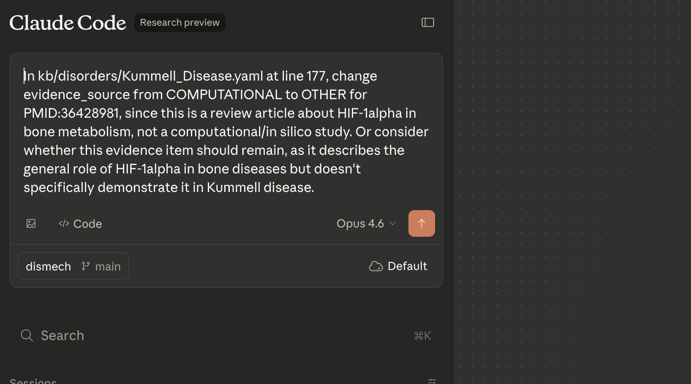
- Agents can support consistent curation of a knowledge resource at scale
- Agents can be very confident about their mistakes -- validation is non-negotiable
- Skills are effective for guiding agent activities
- Exact text evidence is key for trustworthy knowledge bases
- Deep research PMIDs can be hallucinated -- ~15% error rate
- For ultra-rare diseases, direct PubMed/OMIM is more reliable
- Humans drive the agent -- provide guidance, review PRs, give feedback
Applications
From Knowledge Base to Clinical and Research Tools
Application 1: Phenomatcher -- Case-to-Disease Matching
Problem: Given a patient's phenotype profile, which disease best explains the findings?
Phenomatcher takes a GA4GH Phenopacket and matches it against the dismech knowledge base:
Input: Phenopacket (patient HPO terms)
+ Disease model (dismech YAML)
|
v
[HPO ontology reasoning via OAK]
[Exact, broader, narrower, related matches]
[Weighted by disease-model frequency]
|
v
Output: MatchingRun with per-phenotype scores
+ pr_is_diagnosis (probability estimate)
+ explanations for non-matches
Phenomatcher: How Matching Works
For each case phenotype vs. each model phenotype, the system computes:
| Match Type | Example | Weight |
|---|---|---|
| Exact | Patient has HP:0001876, model has HP:0001876 | Highest |
| Case is narrower | Patient: Macrocytic anemia, Model: Anemia | High |
| Case is broader | Patient: Anemia, Model: Macrocytic anemia | Moderate |
| Close (shared parent) | Patient: Thrombocytopenia, Model: Leukopenia | Low |
| No match | Patient phenotype absent from model | Needs explanation |
Model phenotype frequency weights the match: - OBLIGATE (5) > VERY_FREQUENT (4) > FREQUENT (3) > OCCASIONAL (2) > VERY_RARE (1)
pr_is_diagnosis = product of per-row explanation probabilities
Phenomatcher: AI-Augmented Explanations
Non-exact matches get agentic explanation via Claude:
matches:
- case_term_id: HP:0001945 # Fever
model_term_id: null # Not in FA model
exact: false
explanation_for_no_match:
explanation_id: INTERCURRENT_INFECTION
estimated_probability: 0.7
description: >-
Fever is not a primary FA phenotype but patients
with neutropenia are highly susceptible to infections
that present with fever. This is consistent with the
bone marrow failure mechanism.
The causal graph provides mechanistic context for why a phenotype is present or absent.
Phenomatcher: Mechanism-Aware Differential Diagnosis
HPO matching alone cannot distinguish diseases that share phenotypes. Dismech's causal graphs add a mechanistic dimension:
| Patient Phenotypes | Disease A (Fanconi Anemia) | Disease B (Diamond-Blackfan) |
|---|---|---|
| Pancytopenia | Exact (OBLIGATE) | Partial (anemia only) |
| Short stature | Exact (VERY_FREQUENT) | Exact (FREQUENT) |
| Thumb anomalies | Exact (FREQUENT) | Exact (FREQUENT) |
| Skin pigmentation | Exact (VERY_FREQUENT) | No match |
With HPO alone these score similarly. With mechanism context: - FA model traces pancytopenia to DNA repair defect → bone marrow failure - DBA model traces anemia to ribosomal biogenesis → erythroid progenitor apoptosis
The causal graph tells the AI why skin pigmentation fits FA but not DBA.
Phenomatcher: From Matching to Explanation
The full pipeline delivers structured diagnostic reasoning, not just a score:
Input: Phenopacket with 6 HPO terms
|
v
[Deterministic matching]
4 exact, 1 broader, 1 no-match
|
v
[Causal graph traversal]
"Fever unexplained → check neutropenia → infection susceptibility"
|
v
[Agentic explanation (Claude)]
"Fever is consistent with FA via bone marrow failure
→ neutropenia → recurrent infections"
|
v
Output: pr_is_diagnosis = 0.82
+ per-phenotype explanation chain
+ Mermaid DAG with match annotations
Every step is traceable: ontology reasoning via OAK, frequency weights from curated data, explanations grounded in the causal graph.
Application 2: Multi-Space Disease Embeddings
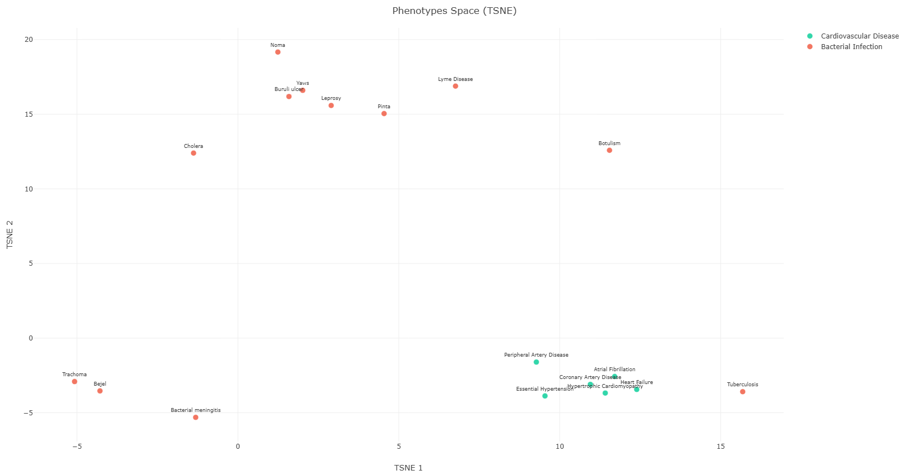
Dismech computes four separate embedding spaces:
| Space | Application |
|---|---|
| Pathophysiology | Mechanistically similar diseases |
| Phenotypes | Clinically similar diseases |
| Treatments | Shared treatment targets |
| Cell types | Same tissues affected |
Each uses OpenAI embeddings (1536-dim) projected via t-SNE/UMAP.
Key insight: Diseases that cluster in phenotype space may diverge in mechanism space -- informative for drug repurposing.
Embeddings: Mechanism-Level Comparison
Beyond disease-level similarity, dismech embeds individual mechanisms:
just embed-mechanisms-all
# Embeds each pathophysiology entry across all 500 disorders
This enables: - Discovering that "Inflammatory Bone Marrow Microenvironment" in Fanconi Anemia clusters with "Chronic Inflammation" in Crohn's Disease - Finding shared pathophysiology entries across unrelated diseases - Identifying mechanism modules that recur across disease categories
Interactive browser at: app/embeddings/mechanisms.html
Application 3: Comorbidity Discovery
Dismech models directional comorbidities with mechanistic evidence:
Data sources: - EHR-based Disease Trajectories (temporal directionality) - Literature evidence with PMIDs - GO enrichment showing shared mechanisms - Genetic overlap (FDR from genetic correlation)
Example candidates: - Male: ~258 strongly directional edges (phase probability >= 0.7) - Female: ~170 strongly directional edges
Each comorbidity page shows the mechanistic overlap -- shared pathophysiology, cell types, and biological processes between disease pairs.
Application 4: Validating Causal Gene-to-Trait Pipelines
Use case: Ota et al. (Nature 2025) builds causal graphs from GWAS + Perturb-seq:
Gene (regulator) --[beta]--> Program --[effect]--> Trait
Dismech serves as a validation and interpretation layer:
| Pipeline Output | Dismech Query |
|---|---|
| GATA1 --> erythroid program --> MCH | Do blood disorders link GATA1 to erythropoiesis? |
| BCL2 --> apoptosis program --> lymphocyte count | Do immune disorders link BCL2 to apoptosis? |
Validation levels: - CONFIRMED: Gene, process, and phenotype all documented with evidence - PARTIAL: Some elements present but incomplete chain - NOVEL: Not in dismech (high-priority curation candidate) - CONTRADICTED: Dismech documents opposite effect
Causal Validation: The Feedback Loop
Computational Pipeline (GWAS + Perturb-seq)
|
v
[Gene-Program-Trait relationships]
|
v +--> CONFIRMED (41%) -- known biology
Dismech +--> PARTIAL (25%) -- incomplete coverage
Query +--> NOVEL (29%) -- curation candidates
+--> CONTRADICTED (6%) -- needs investigation
|
v
[Novel findings feed back into dismech curation]
[Gaps in dismech coverage identified and prioritized]
Dismech becomes both a benchmark for pipeline accuracy and a beneficiary of pipeline discoveries.
GWAS Validation in Practice: T Cell Perturb-seq
The Zhu/Dann et al. follow-up applied genome-scale CRISPRi Perturb-seq in primary CD4+ T cells (22M cells, 4 donors), testing 111 regulator clusters against 14 autoimmune diseases.
We validated their enrichment results against dismech:
| Disease | dismech Genes | Confirmed | Rate |
|---|---|---|---|
| Celiac disease | 4 | 8 | 29.6% |
| Psoriasis | 5 | 15 | 25.0% |
| Multiple sclerosis | 6 | 13 | 19.1% |
| SLE | 11 | 13 | 19.4% |
| Type 1 diabetes | 10 | 7 | 18.9% |
| Crohn's disease | 6 | 15 | 15.3% |
| Asthma | 6 | 12 | 10.6% |
Confirmed genes: PTPN22, CTLA4, IL2RA, IL4, IL13, IL23R, STAT4, BACH2, TNFAIP3, EGR2, IRF4, STAT3...
Standout: Cluster 79 (Th17 Differentiation)
A 6-gene T cell regulator cluster (IRF4, BATF, STAT3, JUNB, IPMK, NUP188) showed massive enrichment across autoimmune GWAS genes:
| Disease | Odds Ratio |
|---|---|
| Crohn's disease | 58.2 |
| Atopic dermatitis | 38.1 |
| Psoriasis | 26.9 |
| IBD (merged) | 24.0 |
| Multiple sclerosis | 16.9 |
This finding drove targeted curation: - Strengthened Th17 pathophysiology (GO:0072538) across Crohn's, Psoriasis, AS, MS, RA - Created new Atopic Dermatitis entry (previously missing, 16 significant cluster-disease pairs) - Added IRF4, BATF, STAT3 as pleiotropic autoimmune risk genes across 12 disease entries
The Iterative Improvement Story
Dismech and the pipeline improve each other through bidirectional curation:
| Stage | Genes Confirmed | Rate | What Changed |
|---|---|---|---|
| Baseline (12 diseases) | 11 / 408 | 2.7% | Classic GWAS genes only |
| + GO terms & cell types | 11 / 408 | 2.7% | Mechanism matching enabled |
| + 6 pleiotropic genes | 17 / 408 | 4.0% | BACH2, TNFAIP3, STAT3, IL10, CD28, EGR2 |
| + 10 more genes | 26 / 408 | 6.1% | ETS1, IRF4, IKZF1, SMAD3, SATB1... |
| + Atopic Dermatitis | 26 / 424 | 6.1% | New disease with Th2/Th17 mechanisms |
Pipeline discoveries → dismech curation → better validation coverage → new discoveries
The remaining ~94% "novel" genes are not contradictions -- they are real GWAS associations (Open Targets score >= 0.1) that dismech hasn't curated yet, representing future curation targets.
Application 5: Knowledge Graph Export (KGX)
Dismech exports to Biolink Model KGX format for integration with knowledge graphs:
# Each assertion becomes a typed Biolink edge
DiseaseToPhenotypicFeatureAssociation # phenotypes
GeneToDiseaseAssociation # genetic factors
ChemicalOrDrugOrTreatmentTo... # treatments
ExposureEventToOutcomeAssociation # environmental factors
All edges tagged with:
- primary_knowledge_source: infores:dismech
- agent_type: manual_validation_of_automated_agent
- Frequency qualifiers mapped to HP terms (HP:0040280-0040284)
- Evidence as PMIDs + supporting_text snippets
Enables integration with Monarch KG, Translator, and other Biolink-compatible systems.
Application 6: Tabular Export for Analysis
Dismech flattens to relational tables for SQL/statistical analysis:
just export-tabular # Generates TSV + DuckDB database
| Table | Content | Rows per disorder |
|---|---|---|
disorders.tsv |
One row per disorder | 1 |
assertions.tsv |
Phenotypes, mechanisms, treatments | 10-100 |
descriptors.tsv |
Ontology terms with post-composition | 10-200 |
evidence.tsv |
PMIDs, snippets, support status | 20-500 |
Enables: Cross-disease queries, frequency analysis, ontology coverage statistics, and ML feature engineering -- all in DuckDB or pandas.
Case Studies
What We've Curated and What We've Learned
Case Study: Fanconi Anemia (Deep Curation)
The most deeply curated entry:
| Dimension | Coverage |
|---|---|
| Mechanisms | 19 |
| Phenotypes | 92 |
| Genes | 25 |
| Treatments | 6 |
| Clinical trials | 3 |
| Subtypes | 24 |
| Context annotations | Per-genotype |
Demonstrates full schema depth for a complex genetic disease with extensive genotype-phenotype correlations.
Case Study: Lipoylation Disorders (Ultra-Rare)
Three ultra-rare mitochondrial disorders (<20 patients each worldwide):
Octanoyl-ACP --[LIPT2]--> Octanoyl-GCSH --[LIAS]--> Lipoyl-GCSH --[LIPT1]--> E2
| Feature | LIPT2 (NELABA) | LIAS | LIPT1 |
|---|---|---|---|
| Complexes affected | All 4 | All 4 | PDH, OGDH, BCKDH only |
| Glycine cleavage | Impaired | Impaired | Spared |
| Hyperglycinemia | Yes | Yes | No |
| Compliance score | 89.4% | 91.7% | 90.9% |
Lesson: For ultra-rare Mendelian disorders, deep research is unreliable (wrong disease returned for LIPT2). Direct PubMed/OMIM-guided curation is the primary driver of quality.
Case Study: NICU Project (Systematic Curation)
Targeted curation of neonatal intensive care conditions:
Categories: - Prematurity/respiratory (RDS, BPD, apnea, PPHN...) - Neurologic (HIE, IVH, PVL, neonatal seizures) - GI (NEC, short bowel syndrome) - Infectious (early/late-onset sepsis, meningitis) - Metabolic (hyperbilirubinemia, hypoglycemia, IEM) - Genetic (chromosomal, skeletal dysplasias)
Progress: 16+ genetic disorders completed, skeletal dysplasias systematic (Thanatophoric, Achondroplasia, SADDAN).
Demonstrates dismech scaling to domain-specific curation projects with clear clinical scope.
Broader Impact
Clinical AI, Research Applications, and the Curation Model
For Clinical AI Systems
Dismech provides what LLMs lack: structured, verifiable mechanistic reasoning
| Clinical AI Need | Dismech Provides |
|---|---|
| Differential diagnosis | Phenomatcher with quantified match probability |
| Explain phenotype | Causal graph tracing mechanism to presentation |
| Predict complications | Downstream effects in causal chains |
| Genotype-specific counseling | Context-specific annotations (excluded/included phenotypes) |
| Treatment rationale | Mechanism-linked treatments with evidence |
Unlike free-text LLM outputs, every dismech assertion is traceable to a PMID and validated against ontology authorities.
For AI/ML Researchers
Dismech as a benchmark and training resource:
- Causal reasoning evaluation: Do LLMs reproduce the mechanism chains?
- Claim verification benchmark: Given a PMID, does the snippet support the claim?
- Ontology grounding evaluation: Can models correctly assign HP/GO/CL terms?
- Phenotype prediction: Given genotype context, predict phenotype inclusions/exclusions
- Drug repurposing: Identify shared mechanisms across diseases in embedding space
- Knowledge graph completion: Fill gaps in dismech's causal graphs
~500 disorders with machine-readable pathophysiology, each with provenance chains.
For Drug Discovery
Multi-space embeddings reveal therapeutic opportunities:
Mechanism clustering: - Diseases sharing "Inflammatory Bone Marrow Microenvironment" may respond to similar anti-inflammatory agents regardless of primary diagnosis - "Genomic Instability" mechanisms cluster across FA, Lynch Syndrome, and BRCA-related cancers
Cross-disease treatment mapping: - If Treatment X works for Disease A via Mechanism M, and Disease B shares Mechanism M, Treatment X is a repurposing candidate - Evidence trail is fully transparent (PMIDs for each link)
Comorbidity-informed targets: - Directional comorbidities suggest shared vulnerabilities for multi-target drug design
The Agentic Curation Model
A new paradigm for biomedical knowledge base maintenance:
Traditional: Human curators read papers, fill forms, submit entries Dismech: Human curators direct AI agents that read papers, fill structured YAML, and submit validated PRs
Human expertise: Strategy, review, domain judgment
AI capability: Literature synthesis, ontology lookup, YAML generation
Validation: Deterministic (schema, terms, references) -- not AI
Integration: GitHub Actions for continuous improvement
Result: A knowledge base that grows faster than human-only curation, with equal or better consistency, and full provenance.
Challenges and Future Directions
Current challenges: - Deep research PMIDs can be hallucinated (~15% error rate) - Snippets limited to abstracts; full-text requires additional infrastructure - Schema evolution requires migrating ~500 files - Tension between coverage breadth and annotation depth
Active development: - Frequency evidence separation -- distinguishing D2P evidence from frequency claims - FHIR/Phenopackets export -- interoperability with clinical data standards - Monarch KG integration -- connecting dismech to Monarch's gene-disease-phenotype graph - Community curation -- expanding beyond the core team - Computable case definitions -- OMOP/ATLAS-compatible cohort logic
Dismech
Structured Disease Mechanisms, Built With and For AI
Browse: https://monarch-initiative.github.io/dismech/ Embeddings: https://monarch-initiative.github.io/dismech/app/embeddings/ Code: https://github.com/monarch-initiative/dismech
Questions? Christopher J. Mungall -- cjmungall@lbl.gov Harry Caufield -- jcaufield@lbl.gov Lawrence Berkeley National Laboratory | Monarch Initiative
Appendix: Coverage by Category
| Category | Count | Examples |
|---|---|---|
| Complex | 75 | Asthma, Type 2 Diabetes, COPD |
| Genetic | 47 | Fanconi Anemia, Cystic Fibrosis, Marfan |
| Mendelian | 40 | Achondroplasia, PKU, Huntington |
| Infectious Disease | 31 | Tuberculosis, Cholera, Lyme Disease |
| Autoimmune | 21 | Lupus, Rheumatoid Arthritis, MS |
| Cancer | 5+ | ALK+ NSCLC, APL, HCC |
| Neurological | 4+ | Alzheimer, Parkinson, ALS |
377 primary disorder files + 149 history snapshots
Appendix: Key Ontologies Used
| Prefix | Ontology | Used For |
|---|---|---|
| HP | Human Phenotype Ontology | Phenotype terms |
| MONDO | Mondo Disease Ontology | Disease identifiers |
| GO | Gene Ontology | Biological processes |
| CL | Cell Ontology | Cell types |
| UBERON | Uberon | Anatomical locations |
| MAXO | Medical Action Ontology | Treatments |
| CHEBI | Chemical Entities of Biological Interest | Chemicals/drugs |
| GENO | Genotype Ontology | Inheritance, zygosity |
| NCIT | NCI Thesaurus | Cancer concepts |
Appendix: Schema Structure
Disease
+-- description, category, parents, prevalence, inheritance
+-- definitions[] (case definitions with criteria sets)
+-- pathophysiology[]
| +-- name, description, cell_types[], genes[]
| +-- biological_processes[], locations[]
| +-- downstream[] (causal links to other mechanisms/phenotypes)
| +-- evidence[]
+-- phenotypes[]
| +-- name, frequency, onset, severity, diagnostic
| +-- phenotype_term (HP ontology binding)
| +-- context_specific_annotations[]
| | +-- genetic_context (gene, allele, zygosity, complementation group)
| | +-- sex, population, onset, frequency, severity
| | +-- excluded (boolean -- phenotype NOT present in this context)
| +-- evidence[]
+-- treatments[] (MAXO-grounded, with evidence)
+-- clinical_trials[] (NCT-linked, with target phenotypes)
+-- subtypes[] (recursive -- subtypes have their own phenotypes)
+-- comorbidities[], differentials[], datasets[]
Appendix: Phenomatcher Architecture
+-----------------+
| Phenopacket | GA4GH standard patient record
| (HPO terms) |
+--------+--------+
|
+--------------v--------------+
| matching.py |
| HPO is-a via OAK/sqlite |
| Frequency-weighted scoring|
+--------+-------------------+
|
+----------v----------+
| MatchingRun.yaml | Deterministic matching output
+----------+----------+
|
+----------v----------+
| cyberian_wrapper | Agentic explanation loop (Claude)
| explain non-matches|
+----------+----------+
|
+----------v----------+
| match_graph.py | Mermaid visualization
| Augmented DAG | Color-coded by match status
+---------------------+
Appendix: Embedding Pipeline
kb/disorders/*.yaml
|
v
[Jinja2 templates extract text per space]
embed_patho.j2 embed_pheno.j2 embed_treat.j2 embed_cells.j2
|
v
[OpenAI text-embedding-ada-002 --> 1536-dim vectors]
[Cached in DuckDB by text hash]
|
v
[UMAP / t-SNE --> 2D projection]
|
v
app/embeddings/data.js (disease-level scatter plots)
app/embeddings/mechanisms_data.js (mechanism-level comparison)
Separate embedding per space enables multi-dimensional disease similarity analysis -- diseases similar in phenotype space may differ in mechanism space.